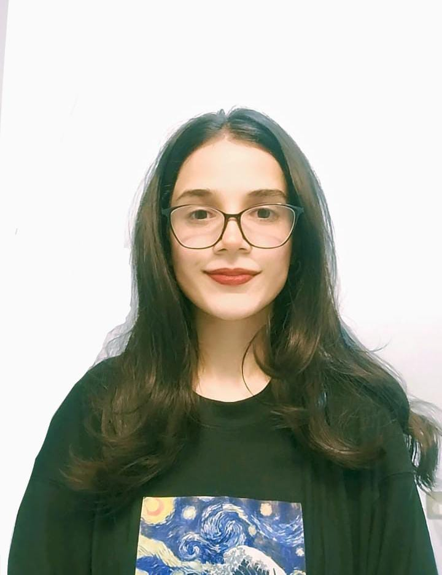

Fatima Munir

Summary
Computer Science student passionate about technology, problem-solving, and development. Explore my projects and expertise.
Education
- Bachelors in Computer Science- LGU (2022-2026)
Work Experience
- Freelance Work on WordPress -Fiverr
August 2024-Present
- Designed and developed WordPress websites for clients.
- Created visuals for businesses and individuals.
- Communicated with clients to understand requirements and deliver high-quality projects.